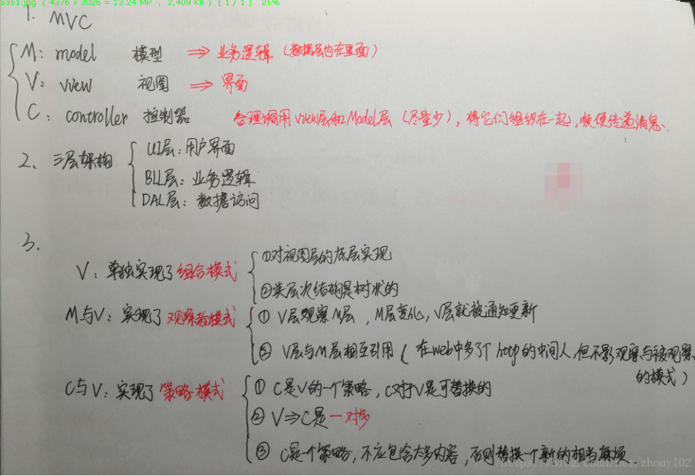

<!DOCTYPE html>
<html>
<head><meta name="generator" content="Hexo 3.8.0">
  <meta charset="utf-8">
  

  
  <title>MVVM发展历程 | pegerys&#39; Hexo</title>
  <meta name="viewport" content="width=device-width, initial-scale=1, maximum-scale=1">
  <meta name="description" content="1. 三层架构三层架构就是将整个业务应用划分为：UI层：界面层（User Interface layer）BLL层：业务逻辑层（Business Logic Layer）DAL层：数据访问层（Data access layer） 区分层次的目的是为了“高内聚低耦合”在软件体系架构设计中，分层式结构是最常见，也是最重要的一种结构。微软推荐的分层式结构一般分为三层，从下至上分别为：数据访问层、业务逻辑">
<meta name="keywords" content="MVVM">
<meta property="og:type" content="article">
<meta property="og:title" content="MVVM发展历程">
<meta property="og:url" content="http://yoursite.com/2019/06/19/MVVM发展历程/index.html">
<meta property="og:site_name" content="pegerys&#39; Hexo">
<meta property="og:description" content="1. 三层架构三层架构就是将整个业务应用划分为：UI层：界面层（User Interface layer）BLL层：业务逻辑层（Business Logic Layer）DAL层：数据访问层（Data access layer） 区分层次的目的是为了“高内聚低耦合”在软件体系架构设计中，分层式结构是最常见，也是最重要的一种结构。微软推荐的分层式结构一般分为三层，从下至上分别为：数据访问层、业务逻辑">
<meta property="og:locale" content="default">
<meta property="og:image" content="http://yoursite.com/2019/06/19/MVVM发展历程/1.png">
<meta property="og:image" content="http://yoursite.com/2019/06/19/MVVM发展历程/2.png">
<meta property="og:updated_time" content="2021-07-30T03:04:48.155Z">
<meta name="twitter:card" content="summary">
<meta name="twitter:title" content="MVVM发展历程">
<meta name="twitter:description" content="1. 三层架构三层架构就是将整个业务应用划分为：UI层：界面层（User Interface layer）BLL层：业务逻辑层（Business Logic Layer）DAL层：数据访问层（Data access layer） 区分层次的目的是为了“高内聚低耦合”在软件体系架构设计中，分层式结构是最常见，也是最重要的一种结构。微软推荐的分层式结构一般分为三层，从下至上分别为：数据访问层、业务逻辑">
<meta name="twitter:image" content="http://yoursite.com/2019/06/19/MVVM发展历程/1.png">
  
    <link rel="alternate" href="/atom.xml" title="pegerys&#39; Hexo" type="application/atom+xml">
  
  
    <link rel="icon" href="/favicon.png">
  
  
    <link href="//fonts.googleapis.com/css?family=Source+Code+Pro" rel="stylesheet" type="text/css">
  
  <link rel="stylesheet" href="/css/style.css">
</head>
</html>
<body>
  <div id="container">
    <div id="wrap">
      <header id="header">
  <div id="banner"></div>
  <div id="header-outer" class="outer">
    <div id="header-title" class="inner">
      <h1 id="logo-wrap">
        <a href="/" id="logo">pegerys&#39; Hexo</a>
      </h1>
      
    </div>
    <div id="header-inner" class="inner">
      <nav id="main-nav">
        <a id="main-nav-toggle" class="nav-icon"></a>
        
          <a class="main-nav-link" href="/">Home</a>
        
          <a class="main-nav-link" href="/archives">Archives</a>
        
      </nav>
      <nav id="sub-nav">
        
          <a id="nav-rss-link" class="nav-icon" href="/atom.xml" title="RSS Feed"></a>
        
        <a id="nav-search-btn" class="nav-icon" title="Search"></a>
      </nav>
      <div id="search-form-wrap">
        <form action="//google.com/search" method="get" accept-charset="UTF-8" class="search-form"><input type="search" name="q" class="search-form-input" placeholder="Search"><button type="submit" class="search-form-submit">&#xF002;</button><input type="hidden" name="sitesearch" value="http://yoursite.com"></form>
      </div>
    </div>
  </div>
</header>
      <div class="outer">
        <section id="main"><article id="post-MVVM发展历程" class="article article-type-post" itemscope itemprop="blogPost">
  <div class="article-meta">
    <a href="/2019/06/19/MVVM发展历程/" class="article-date">
  <time datetime="2019-06-19T15:56:39.000Z" itemprop="datePublished">2019-06-19</time>
</a>
    
  <div class="article-category">
    <a class="article-category-link" href="/categories/MVVM/">MVVM</a>
  </div>

  </div>
  <div class="article-inner">
    
    
      <header class="article-header">
        
  
    <h1 class="article-title" itemprop="name">
      MVVM发展历程
    </h1>
  

      </header>
    
    <div class="article-entry" itemprop="articleBody">
      
        <h1 id="1-三层架构"><a href="#1-三层架构" class="headerlink" title="1. 三层架构"></a>1. 三层架构</h1><p>三层架构就是将整个业务应用划分为：<br>UI层：界面层（User Interface layer）<br>BLL层：业务逻辑层（Business Logic Layer）<br>DAL层：数据访问层（Data access layer）</p>
<p>区分层次的目的是为了“高内聚低耦合”<br>在软件体系架构设计中，分层式结构是最常见，也是最重要的一种结构。微软推荐的分层式结构一般分为三层，从下至上分别为：数据访问层、业务逻辑层（又或称为领域层）、表示层。</p>
<h1 id="2-MVC"><a href="#2-MVC" class="headerlink" title="2.MVC"></a>2.MVC</h1><p>如下图所示<br><br>代码如下：<br><figure class="highlight plain"><table><tr><td class="gutter"><pre><span class="line">1</span><br><span class="line">2</span><br><span class="line">3</span><br><span class="line">4</span><br><span class="line">5</span><br><span class="line">6</span><br><span class="line">7</span><br><span class="line">8</span><br><span class="line">9</span><br><span class="line">10</span><br><span class="line">11</span><br><span class="line">12</span><br><span class="line">13</span><br><span class="line">14</span><br><span class="line">15</span><br><span class="line">16</span><br><span class="line">17</span><br><span class="line">18</span><br><span class="line">19</span><br><span class="line">20</span><br><span class="line">21</span><br><span class="line">22</span><br><span class="line">23</span><br><span class="line">24</span><br><span class="line">25</span><br><span class="line">26</span><br><span class="line">27</span><br><span class="line">28</span><br><span class="line">29</span><br><span class="line">30</span><br><span class="line">31</span><br><span class="line">32</span><br><span class="line">33</span><br><span class="line">34</span><br><span class="line">35</span><br><span class="line">36</span><br><span class="line">37</span><br><span class="line">38</span><br><span class="line">39</span><br><span class="line">40</span><br><span class="line">41</span><br><span class="line">42</span><br><span class="line">43</span><br><span class="line">44</span><br><span class="line">45</span><br><span class="line">46</span><br><span class="line">47</span><br><span class="line">48</span><br><span class="line">49</span><br><span class="line">50</span><br><span class="line">51</span><br><span class="line">52</span><br><span class="line">53</span><br><span class="line">54</span><br><span class="line">55</span><br><span class="line">56</span><br><span class="line">57</span><br><span class="line">58</span><br><span class="line">59</span><br><span class="line">60</span><br><span class="line">61</span><br><span class="line">62</span><br><span class="line">63</span><br><span class="line">64</span><br><span class="line">65</span><br><span class="line">66</span><br><span class="line">67</span><br><span class="line">68</span><br><span class="line">69</span><br><span class="line">70</span><br><span class="line">71</span><br><span class="line">72</span><br><span class="line">73</span><br><span class="line">74</span><br><span class="line">75</span><br><span class="line">76</span><br><span class="line">77</span><br><span class="line">78</span><br><span class="line">79</span><br></pre></td><td class="code"><pre><span class="line">// 一个关于数据操作，页面展示的 js 文件的mvc的代码组织形式</span><br><span class="line">! function ()&#123;</span><br><span class="line">var view = document.querySelector(&apos;section.message&apos;)</span><br><span class="line"></span><br><span class="line">var model =&#123;</span><br><span class="line">//初始化数据</span><br><span class="line">init: function()&#123;</span><br><span class="line">var APP_ID = &apos;XXX&apos;;</span><br><span class="line">var APP_KEY = &apos;xxx&apos;;</span><br><span class="line">AV.init(&#123; appId: APP_ID, appKey: APP_KEY &#125;);</span><br><span class="line">&#125;,</span><br><span class="line">// 获取数据</span><br><span class="line">fetch: function()&#123;</span><br><span class="line">var query = new AV.Query(&apos;Message&apos;)</span><br><span class="line">return query.find() // Promise 对象</span><br><span class="line">&#125;,</span><br><span class="line">// 新建数据</span><br><span class="line">save: function(name, content)&#123;</span><br><span class="line">var Message = AV.Object.extend(&apos;Message&apos;);</span><br><span class="line">var message = new Message();</span><br><span class="line">return message.save(&#123; // Promise 对象</span><br><span class="line">&apos;name&apos;: name ,</span><br><span class="line">&apos;content&apos;: content</span><br><span class="line">&#125;)</span><br><span class="line">&#125;</span><br><span class="line">&#125;</span><br><span class="line"></span><br><span class="line">var controller = &#123;</span><br><span class="line">view: null,</span><br><span class="line">model: null,</span><br><span class="line">messageList: null,</span><br><span class="line">init: function(view,model)&#123;</span><br><span class="line">this.view = view</span><br><span class="line">this.model = model</span><br><span class="line"></span><br><span class="line">this.messageList = view.querySelector(&apos;#messageList&apos;)</span><br><span class="line">this.form = myForm = view.querySelector(&apos;form&apos;)</span><br><span class="line">this.model.init()</span><br><span class="line">this.loadMessages()</span><br><span class="line">this.bindEvents()</span><br><span class="line">&#125;,</span><br><span class="line">loadMessages: function()&#123;</span><br><span class="line">this.model.fetch().then( (messages) =&gt; &#123;</span><br><span class="line">let array = messages.map((item) =&gt; item.attributes)</span><br><span class="line">array.forEach((item) =&gt; &#123;</span><br><span class="line">let li = document.createElement(&apos;li&apos;)</span><br><span class="line">li.innerText = `$&#123;item.name&#125;: $&#123;item.content&#125;`</span><br><span class="line">let messageList = document.querySelector(&apos;#messageList&apos;)</span><br><span class="line">messageList.appendChild(li)</span><br><span class="line">&#125;)</span><br><span class="line">&#125;, function (error) &#123;</span><br><span class="line">console.log(&apos;提交失败, 请改天再留言&apos;)</span><br><span class="line">&#125;);</span><br><span class="line">&#125;,</span><br><span class="line">bindEvents: function()&#123;</span><br><span class="line">this.form.addEventListener(&apos;submit&apos;, function (e)&#123;</span><br><span class="line">e.preventDefault()</span><br><span class="line">this.saveMessage()</span><br><span class="line">&#125;.bind(this)) // 用bind将this绑定到 funtion 里面</span><br><span class="line">&#125;,</span><br><span class="line">saveMessage: function()&#123;</span><br><span class="line">let myForm = this.form</span><br><span class="line">let content = myForm.querySelector(&apos;input[name=content]&apos;).value</span><br><span class="line">let name = myForm.querySelector(&apos;input[name=name]&apos;).value</span><br><span class="line">this.model.save(name, content).then(function(object) &#123;</span><br><span class="line">let li = document.createElement(&apos;li&apos;)</span><br><span class="line">if(object.attributes.name !== &apos;&apos; &amp;&amp; object.attributes.content !== &apos;&apos;) &#123;</span><br><span class="line">li.innerText = `$&#123;object.attributes.name&#125;: $&#123;object.attributes.content&#125;`</span><br><span class="line">let messageList = document.querySelector(&apos;#messageList&apos;)</span><br><span class="line">messageList.appendChild(li)</span><br><span class="line">myForm.querySelector(&apos;input[name=content]&apos;).value = &apos;&apos;</span><br><span class="line">myForm.querySelector(&apos;input[name=name]&apos;).value = &apos;&apos;</span><br><span class="line">&#125;</span><br><span class="line">&#125;)</span><br><span class="line">&#125;</span><br><span class="line">&#125;</span><br><span class="line">controller.init(view, model)</span><br><span class="line"></span><br><span class="line">&#125;.call()</span><br></pre></td></tr></table></figure></p>
<p>缺点：<br>视图与控制器间的过于紧密的连接，不利于View的组件化，即可复用性低<br>视图对模型数据的低效率访问<br>没有UI环境，Controller的单元测试变得困难</p>
<h1 id="3-MVP（MVC-的改良）"><a href="#3-MVP（MVC-的改良）" class="headerlink" title="3. MVP（MVC 的改良）"></a>3. MVP（MVC 的改良）</h1><p>MVP与MVC最大的区别就用Presenter将Model和View隔开了，不允许其互相直接通信，所有的消息都是通过Presenter这个中间人来传递。<br>如下图所示：<br></p>
<p>缺点：<br>View层和Presenter层是通过接口连接，在复杂的界面中，维护过多接口的成本很大<br>View和Presenter层的交互会过于频繁，二者联系太过紧密</p>
<h1 id="4-MVVM（MVP-的改良）"><a href="#4-MVVM（MVP-的改良）" class="headerlink" title="4. MVVM（MVP 的改良）"></a>4. MVVM（MVP 的改良）</h1><p>MVVM代表的是Model-View-ViewModel，将MVP中的P换成VM（视图模型），它的依赖关系和MVP是一样的<br>MVVM把View和Model的同步逻辑通过binder自动化了。MVP的Presenter负责的View和Model同步不再需要手动操作，而是交由框架所提供的Binder进行负责<br>Vue.js就是MVVM框架的一种典型实现，它的核心思想为数据驱动和组件化<br>缺点：<br>数据绑定使得 Bug 很难被调试</p>

      
    </div>
    <footer class="article-footer">
      <a data-url="http://yoursite.com/2019/06/19/MVVM发展历程/" data-id="ckrwxz89p0006mwv0s7yvpyn3" class="article-share-link">Share</a>
      
      
  <ul class="article-tag-list"><li class="article-tag-list-item"><a class="article-tag-list-link" href="/tags/MVVM/">MVVM</a></li></ul>

    </footer>
  </div>
  
    
<nav id="article-nav">
  
    <a href="/2019/06/25/关于this、call、apply和bind/" id="article-nav-newer" class="article-nav-link-wrap">
      <strong class="article-nav-caption">Newer</strong>
      <div class="article-nav-title">
        
          关于this、call、apply和bind
        
      </div>
    </a>
  
  
    <a href="/2019/06/03/ajax/" id="article-nav-older" class="article-nav-link-wrap">
      <strong class="article-nav-caption">Older</strong>
      <div class="article-nav-title">ajax</div>
    </a>
  
</nav>

  
</article>

</section>
        
          <aside id="sidebar">
  
    
  <div class="widget-wrap">
    <h3 class="widget-title">Categories</h3>
    <div class="widget">
      <ul class="category-list"><li class="category-list-item"><a class="category-list-link" href="/categories/JS/">JS</a></li><li class="category-list-item"><a class="category-list-link" href="/categories/JS-原型链/">JS 原型链</a></li><li class="category-list-item"><a class="category-list-link" href="/categories/MVVM/">MVVM</a></li><li class="category-list-item"><a class="category-list-link" href="/categories/ajax/">ajax</a></li><li class="category-list-item"><a class="category-list-link" href="/categories/git/">git</a></li><li class="category-list-item"><a class="category-list-link" href="/categories/hexo/">hexo</a></li><li class="category-list-item"><a class="category-list-link" href="/categories/jQuery/">jQuery</a></li></ul>
    </div>
  </div>


  
    
  <div class="widget-wrap">
    <h3 class="widget-title">Tags</h3>
    <div class="widget">
      <ul class="tag-list"><li class="tag-list-item"><a class="tag-list-link" href="/tags/JS/">JS</a></li><li class="tag-list-item"><a class="tag-list-link" href="/tags/MVVM/">MVVM</a></li><li class="tag-list-item"><a class="tag-list-link" href="/tags/ajax/">ajax</a></li><li class="tag-list-item"><a class="tag-list-link" href="/tags/cat/">cat</a></li><li class="tag-list-item"><a class="tag-list-link" href="/tags/gitbash/">gitbash</a></li><li class="tag-list-item"><a class="tag-list-link" href="/tags/hexo-git-npm/">hexo git npm</a></li><li class="tag-list-item"><a class="tag-list-link" href="/tags/jQuery/">jQuery</a></li><li class="tag-list-item"><a class="tag-list-link" href="/tags/ls/">ls</a></li><li class="tag-list-item"><a class="tag-list-link" href="/tags/mv/">mv</a></li><li class="tag-list-item"><a class="tag-list-link" href="/tags/touch/">touch</a></li></ul>
    </div>
  </div>


  
    
  <div class="widget-wrap">
    <h3 class="widget-title">Tag Cloud</h3>
    <div class="widget tagcloud">
      <a href="/tags/JS/" style="font-size: 20px;">JS</a> <a href="/tags/MVVM/" style="font-size: 10px;">MVVM</a> <a href="/tags/ajax/" style="font-size: 10px;">ajax</a> <a href="/tags/cat/" style="font-size: 10px;">cat</a> <a href="/tags/gitbash/" style="font-size: 10px;">gitbash</a> <a href="/tags/hexo-git-npm/" style="font-size: 10px;">hexo git npm</a> <a href="/tags/jQuery/" style="font-size: 10px;">jQuery</a> <a href="/tags/ls/" style="font-size: 10px;">ls</a> <a href="/tags/mv/" style="font-size: 10px;">mv</a> <a href="/tags/touch/" style="font-size: 10px;">touch</a>
    </div>
  </div>

  
    
  <div class="widget-wrap">
    <h3 class="widget-title">Archives</h3>
    <div class="widget">
      <ul class="archive-list"><li class="archive-list-item"><a class="archive-list-link" href="/archives/2021/08/">August 2021</a></li><li class="archive-list-item"><a class="archive-list-link" href="/archives/2019/06/">June 2019</a></li><li class="archive-list-item"><a class="archive-list-link" href="/archives/2019/05/">May 2019</a></li><li class="archive-list-item"><a class="archive-list-link" href="/archives/2019/04/">April 2019</a></li><li class="archive-list-item"><a class="archive-list-link" href="/archives/2019/03/">March 2019</a></li><li class="archive-list-item"><a class="archive-list-link" href="/archives/2019/01/">January 2019</a></li><li class="archive-list-item"><a class="archive-list-link" href="/archives/2018/12/">December 2018</a></li></ul>
    </div>
  </div>


  
    
  <div class="widget-wrap">
    <h3 class="widget-title">Recent Posts</h3>
    <div class="widget">
      <ul>
        
          <li>
            <a href="/2021/08/04/修复后的第一篇blog/">修复后的第一篇blog</a>
          </li>
        
          <li>
            <a href="/2019/06/25/关于this、call、apply和bind/">关于this、call、apply和bind</a>
          </li>
        
          <li>
            <a href="/2019/06/19/MVVM发展历程/">MVVM发展历程</a>
          </li>
        
          <li>
            <a href="/2019/06/03/ajax/">ajax</a>
          </li>
        
          <li>
            <a href="/2019/06/02/環境搭建/">環境搭建</a>
          </li>
        
      </ul>
    </div>
  </div>

  
</aside>
        
      </div>
      <footer id="footer">
  
  <div class="outer">
    <div id="footer-info" class="inner">
      &copy; 2021 pergery peng<br>
      Powered by <a href="http://hexo.io/" target="_blank">Hexo</a>
    </div>
  </div>
</footer>
    </div>
    <nav id="mobile-nav">
  
    <a href="/" class="mobile-nav-link">Home</a>
  
    <a href="/archives" class="mobile-nav-link">Archives</a>
  
</nav>
    

<script src="//ajax.googleapis.com/ajax/libs/jquery/2.0.3/jquery.min.js"></script>


  <link rel="stylesheet" href="/fancybox/jquery.fancybox.css">
  <script src="/fancybox/jquery.fancybox.pack.js"></script>


<script src="/js/script.js"></script>


  </div>
<script type="text/x-mathjax-config">
    MathJax.Hub.Config({
        tex2jax: {
            inlineMath: [ ["$","$"], ["\\(","\\)"] ],
            skipTags: ['script', 'noscript', 'style', 'textarea', 'pre', 'code'],
            processEscapes: true
        }
    });
    MathJax.Hub.Queue(function() {
        var all = MathJax.Hub.getAllJax();
        for (var i = 0; i < all.length; ++i)
            all[i].SourceElement().parentNode.className += ' has-jax';
    });
</script>
<script src="http://cdn.mathjax.org/mathjax/latest/MathJax.js?config=TeX-AMS-MML_HTMLorMML"></script>
</body>
</html>